core lines to buy. stock check look at home first. optional only if you still want it. meal staples flex is the envelope for that line. Tap the box when an item is in the cart. Checks and notes save on this phone and browser only, under list SL-20261119-THU. Use "Send notes to Meal Planner" at the bottom when you are done.
Core $98.29 est. (Meals $98.29, Staples $0.00, Flex $0.00) covers fruit, russet potatoes, bananas, carrots, cucumbers, salad bags, cabbage, gluten-free bread, oats, tortillas, gluten-free pasta, canned corn, cheddar, eggs, yogurt, Friday ground beef, and two chicken-tender trays. Fresh broccoli, romaine, rice noodles, white beans, corn chips, rice cakes, frozen waffles, and the Sunday stir-fry beef are core too but unpriced and are not in that dollar total. Deli chicken is by the lb and is also outside the sum.
Stock-check $64.87 est. (Meals $41.10, Staples $23.77) covers onions, broth, gravy, rice, honey, granola, peanut butter, bread, crackers, soy, milk, paper plates, and paper towels only if the stock already at home (including extras of gravy, onions, and beef broth, plus paper goods from the Monday 11/16 list) will not cover Fri-Mon. Mixed nuts are unpriced.
Store pick: Whole list is Walmart #4111. Bigger-ticket items were compared per unit with the latest figures that can be cited (see below). Nothing currently confirmed at H-E-B or Sam's is a clear enough win to add a second stop. Coffee is compared only for the record; it is not on this list.
Walk: AP3, AP5, AP7, AP8, A1, A3, A4, A13, A14, A15, A18, A20, A21, A28, A29, A31, A33, J17, J26. Dietary note: shared dishes are gluten-free (one eater needs gluten-free food; another is gluten-sensitive). No pork, spinach, grilled cheese, or green chiles. Skip ground poultry and deli poultry other than chicken.
Store comparison (meat, rice, coffee, paper goods)
Direct Walmart, H-E-B, and Sam's store pages blocked or timed out on 11/17. The usual computer was offline, so these lookups did not go through that connection. Figures below are dated. Unknowns are marked. No price here was guessed.
Meat
- Walmart #4111: 90/10 ground beef sirloin, 2.25 lb brick, $16.78 ($7.46/lb), price used on the 11/12 and 11/16 lists, not rechecked 11/17. The 11/13 #4111 receipt also had a 5 lb 80/20 pack at $24.93 ($4.99/lb). Freshness Guaranteed tenderloin trays were listed at $9.16; the same ticket had two trays at $8.57 and $7.73 with no weights printed, so a firm per-pound tender price is not claimed. Sunday stir-fry beef has no confirmed price at any store today.
- H-E-B (4950 FM 1463, Katy): no confirmed current ground-beef, tender, or sirloin price on 11/17. The official price book does not have a later H-E-B meat check to use.
- Sam's Club #6867 (22402 Bellaire Blvd, Richmond): official price book, 2026-09-06, has ground beef at $5.86/lb on a $62.94 package (about 10.74 lb). That figure is more than two months old, was not confirmed at this club (the original lookup hit a robot check), and is not a 11/17 shelf price.
Rice
- Walmart: Great Value long-grain rice, 5 lb, $3.52 ($0.70/lb), Walmart.com catalog 11/16, not a confirmed #4111 pickup check and not rechecked 11/17. A 5 lb bag was already a core line on the Monday 11/16 list, so this trip treats rice as a stock-check.
- H-E-B: no confirmed current rice price on 11/17.
- Sam's Club: official price book, 2026-09-06, has long-grain rice at $0.44/lb on a $21.98 package. That package size is not re-verified here, the date is stale, and the club was not confirmed.
Coffee
- Coffee is not on this shopping list. It is compared only because it is a bigger staple.
- H-E-B Close: Cameron's Abilene Style whole-bean coffee, 16 oz, $7.99 ($0.50/oz), official price book 2026-09-06. Stale. Not a 11/17 shelf price.
- Walmart and Sam's: no confirmed current coffee price on 11/17, and no later receipt line to use.
Paper towels
- Walmart: Great Value Everyday Strong, 6 Triple Rolls, 2-ply, 990 sheets, $8.12 on Walmart.com 11/16 (item 10977767707). 0.82 cents/sheet. Not rechecked 11/17.
- H-E-B: Our Finest Invent-A-Size, 6 Double Rolls, $9.92 (product 2228013), compared 11/16. Sheet count for that exact pack was not confirmed, so a per-sheet price is not claimed. Field & Future 2 Double Rolls (244 sheets) at $3.48 was 1.43 cents/sheet, higher than Walmart.
- Sam's Club: Member's Mark Select & Tear 2-ply, 15 rolls x 150 sheets (2,250 sheets), $19.98 on 11/16 (item 980022772). 0.89 cents/sheet. Not confirmed at club #6867. Not rechecked 11/17.
Paper plates
- Walmart: Great Value Everyday Design, 8.5 in, 300 ct, $12.97 (item 106826867), 11/16. 4.32 cents/plate.
- H-E-B: Elegant Living by H-E-B 8.5 in, 60 ct, $5.98 (product 2127555), 11/16. 9.97 cents/plate.
- Sam's Club: Member's Mark Ultra dinner plates, 10 in, 204 ct, $18.98 (item 980076970), 11/16. 9.30 cents/plate. Larger plate, but more than twice Walmart's per-plate cost.
Recommendation: Stay at Walmart #4111 for the whole list. The only current, dated meat unit price that is clearly cheaper than the stale Sam's book is Walmart's own 11/13 80/20 receipt at $4.99/lb. Paper towels and plates were already cheapest per unit at Walmart on 11/16, and those packs were on the Monday list, so they are stock-checks today. Rice is also a stock-check if Monday's 5 lb bag was bought. Coffee prices are too stale or incomplete to justify a second stop.
Gluten-free alert
FRIDAY PATTIES: Pioneer gluten-free brown gravy, 2 packets. No ketchup glaze and no bread crumbs unless they are gluten-free. The card does not need a binder.
SATURDAY TENDERS AND PASTA SALAD: Crumb the tenders with crushed gluten-free bread or a labeled gluten-free cereal or panko, not regular breadcrumbs. The shared pasta salad must use gluten-free pasta.
SUNDAY STIR-FRY AND WAFFLES: Rice noodles and soy must say gluten-free. Use green-label Kikkoman, not regular soy. Waffles must be labeled gluten-free. No tomato sauce and no chile peppers.
MONDAY CHOWDER AND TOAST: Gluten-free chicken broth, and cornstarch or gluten-free flour only. Corn tortillas, not flour tortillas, for the crisps. Gluten-free bread for anyone who needs it.
Pantry checks (not separate buy lines unless a stock-check line already exists)
- CHECK Extra gravy packets, onions, and beef broth already at home. Those three are stock-checks, not core.
- CHECK Paper towels and paper plates from the Monday 11/16 list before buying another pack.
- CHECK The 5 lb rice bag from the Monday 11/16 list, and any leftover gluten-free chicken broth after Thursday dinner.
- CHECK Gluten-free all-purpose flour and regular all-purpose flour (staples). Saturday coating can use a light gluten-free dredge if the bag is there; this list does not add a flour line.
- CHECK Butter, oil, vinegar, salt, pepper, garlic, paprika, thyme, cinnamon, and baking powder for the cards this weekend.
- SKIP Ground turkey, pork, green chiles, grilled cheese, and regular soy or wheat pasta for shared dishes.
Not this trip
Thursday 11/19 dinner (crockpot chicken and veggies) is covered by the Monday 11/16 list, not this one. This list starts with Friday breakfast. Coffee, dish soap, dishwasher detergent, and diet cola are not on the list. Cycle 6 meals are not approved yet, so nothing here is bought for Tue 11/24 onward. Thanksgiving shopping is a later question.
AP3grapes1 item
-
Green Seedless Grapes (~2.25 lb bag est.)Buy 1 bag (covers Friday breakfast, Saturday lunch, and Monday morning snack) core meal Aisle AP3$4.43 est. ($1.97/lb; final cost by weight) · #4111 online pickup check 11/13 (not rechecked 11/17)Friday oat-square breakfast, Saturday pasta-salad lunch, and Monday morning snack for three. Any leftover from the Monday 11/16 stock-check bag will not cover four more days.
Add note

AP5mandarins, pears2 items
-
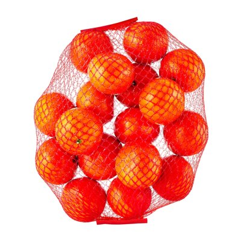
No photo yet
View itemFresh Mandarin Oranges, 3 lb bagBuy 1 bag (3 lb) core meal Aisle AP5$4.33 each · line $4.33 · #4111 online pickup check 11/13 (not rechecked 11/17)Friday morning snack, Saturday afternoon snack, and Sunday morning snack. Saturday and Sunday lunches also allow an orange when the menu only says fruit.Add note
-
Fresh Bartlett Pears, 3 lb bagBuy 1 bag (3 lb) core meal Aisle AP5$5.33 each · line $5.33 · #4111 online pickup check 11/13 (not rechecked 11/17)Friday packed lunch, Saturday morning snack, and Monday lunch pears for five.
Add note

AP7potatoes, onions2 items
-
Fresh Whole Russet Potatoes, 5 lb bagBuy 1 bag (5 lb). Covers Saturday wedges (about 2 lb) and Monday chowder (about 1.5 lb) core meal Aisle AP7$2.47 each · line $2.47 · #4111 online pickup check 11/13 (Walmart.com still showed $2.47 on 11/16; 41% off list $4.24). Not rechecked 11/17.The Monday 11/16 list dropped russets because some were already at home for Monday mash, Tuesday baked potatoes, and Wednesday pot roast. Those dinners use that stock. Thursday gold potatoes are for Thursday night only. This bag is for Saturday wedges and Monday chowder.
Add note
-
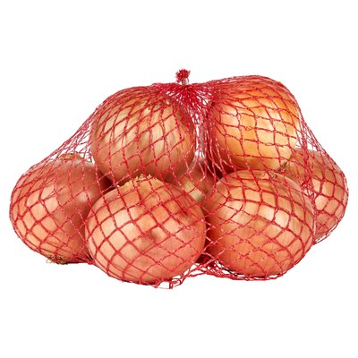
No photo yet
View itemFresh Yellow Onions, 3 lb bagBuy 1 bag only if the extra onions already at home will not cover Sunday stir-fry and Monday chowder (about 2 onions) stock check meal Aisle AP7Now $2.38 each · line $2.38 · #4111 online pickup check 11/13 (not rechecked 11/17)Extra onions were already confirmed at home. Skip this bag if two cooking onions are still there. Do not buy more just to have a bag.Add note

AP8bananas1 item
-
Fresh Banana, eachBuy about 12 bananas (~1 to 2 bunches) core meal Aisle AP8Now $0.19 each est. ($0.48/lb final cost by weight) · est. line $2.28 · #4111 online pickup check 11/13 (not rechecked 11/17)Daily late-morning yogurt bowls, Friday afternoon snack and smoothie, Sunday waffles and rice cakes, and Monday baked oatmeal (3 bananas) plus toast. The Monday 11/16 core bunch was about 8 bananas and was meant to cover only Tue-Thu.
Add note
A1carrots, broccoli, salad, slaw6 items
-
Fresh Whole Carrots, 2 lb bagBuy 1 bag (2 lb) core meal Aisle A1$2.26 each · line $2.26 · #4111 online pickup check 11/13 (not rechecked 11/17)Friday dinner uses about 1.5 lb roasted carrots. Sunday stir-fry uses about 1/2 lb. Monday lunch packs carrot sticks. The Monday 11/16 bag was for Wednesday and Thursday dinners.
Add note
-
Fresh broccoli crowns or florets, about 1.5 to 2 lbBuy about 1.5 to 2 lb for Sunday stir-fry core meal Aisle A1$2.26/lb, about $1.83 each (est.) · same #4111 note as the Monday list. Not in the fixed total until it is weighed.Sunday beef and broccoli rice-noodle stir-fry. Tuesday's broccoli from the Monday list will already have been cooked. Estimate only; not in the core dollar total.
Add note
-
Fresh Cucumber, eachBuy 3 cucumbers core meal Aisle A1$0.58 each · line $1.74 · #4111 online pickup check 11/13 (2 for $1.16 on the Monday list; not rechecked 11/17)Friday cucumber salad, Saturday pasta salad, and Sunday white-bean cucumber salad. Three is the planned count for four days.
Add note
-
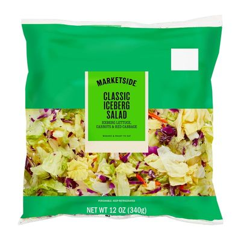
No photo yet
View itemMarketside Classic Iceberg Salad, 12 oz bagBuy 2 bags (Sunday and Monday dinner side salads) core meal Aisle A1$1.97 each · line $3.94 · #4111 online pickup check 11/13 (not rechecked 11/17)Sunday stir-fry and Monday chowder both have a side salad. No tomato on the shared plates. These bags are not a substitute for Friday lettuce wraps.Add note
-
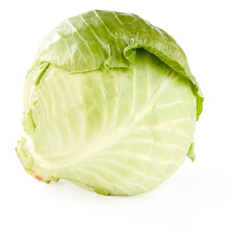
No photo yet
View itemFresh Green Cabbage, eachBuy 1 small head (for Saturday yogurt slaw) core meal Aisle A1 (unconfirmed)$2.38 each · line $2.38 · Walmart.com catalog 11/17 (item 44391042), not a confirmed #4111 pickup check. Sold by the head; register price may change with weight.Saturday cabbage slaw with a yogurt dressing. Grouped with other produce in A1; that exact bunker is not confirmed at #4111. A 14 oz shredded bag is fine if the head is not there.Add note
-
No photo yetRomaine hearts, 3 ct (or 1 head of iceberg), for Friday lettuce wrapsBuy 1 pack of romaine hearts, or 1 iceberg head if that is what is on the shelf core meal Aisle A1 (unconfirmed)Price not confirmed at #4111 or on a usable Walmart.com pickup check today. Not in the totals.Friday deli-chicken lettuce wraps for five plus the afternoon meal. The 12 oz iceberg salad bags are for dinner salads, not wraps. Aisle grouped with A1 produce and is unconfirmed for this SKU. No photo yet.
Add note


A3gluten-free bread1 item
-
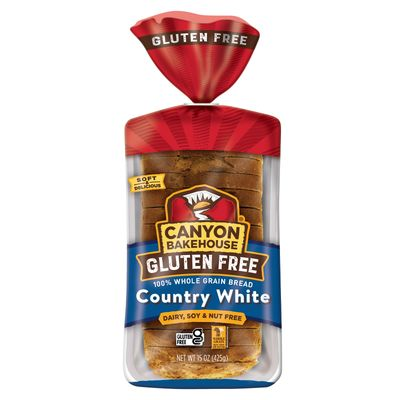
No photo yet
View itemCanyon Bakehouse Country White gluten-free bread, 15 oz (fresh)Buy 1 loaf (Saturday crumb coating and Monday toast) core meal Aisle A3$7.12 each · line $7.12 · same SKU and price used on the Monday 11/16 list (not rechecked 11/17). Read the Gluten-Free label.Saturday tenders need about 3 cups of gluten-free crumbs (crush the loaf or labeled gluten-free cereal). Monday peanut-butter toast also needs gluten-free bread for anyone who needs it. Skip only if a full unused loaf is still on the counter and you have another gluten-free crumb.Add note
A4frozen waffles, frozen corn2 items
-
No photo yetFrozen gluten-free waffles, 1 box (8-12 ct)Buy 1 box only if you do not already have a labeled gluten-free waffle mix. Read the Gluten-Free label. core meal Aisle A4 (unconfirmed)Price and exact brand not confirmed at #4111. Walmart, H-E-B, and Sam's product pages blocked or failed to return a single in-store waffle SKU today. Not in the totals.Sunday breakfast is gluten-free waffles with peanut butter, yogurt, and banana. The menu does not say frozen vs mix vs homemade. A labeled gluten-free frozen waffle is the planned buy; a labeled mix already in the house is fine. Do not buy regular wheat waffles. Grouped with frozen foods in A4 (peas and carrots were confirmed A4 on 11/12); the waffle bunker itself is unconfirmed. No photo yet.
Add note
-
Great Value No-Salt-Added Golden Sweet Whole Kernel Corn, 15.25 oz canBuy 1 can (Monday chowder). A 12 oz frozen sweet-corn bag is also fine if that is what you find first. core meal Aisle A4 (unconfirmed)$0.87 each · line $0.87 · Walmart.com catalog 11/17 (item 589659824), not a confirmed #4111 pickup check. Frozen 12 oz sweet corn was not found with a confirmed #4111 or Walmart.com pickup price today.Monday chicken, corn, and potato chowder. If you pick up a frozen 12 oz bag in this freezer aisle instead, skip the can. Grouped here with frozen vegetables (A4 confirmed 11/12 for peas and carrots). The canned-corn aisle, if you grab the can, is unconfirmed and may be with other canned vegetables near A13 or A16.
Add note

A13broth, gravy, oats, soy, beans6 items
-
Great Value Gluten-Free Chicken Broth, 32 oz cartonBuy 1 carton only if you cannot confirm a gluten-free chicken carton with 4 cups left for Monday chowder after Thursday dinner stock check meal Aisle A13$2.48 each · line $2.48 · #4111 price from the 11/12 list (not rechecked 11/17). Friday 11/13 also bought 48 oz GV broth cartons at $1.78; flavor was not printed, so read the label.Monday chowder uses 4 cups of gluten-free chicken broth. Thursday's crockpot chicken also uses chicken broth. Extra beef broth at home does not replace this unless a carton is actually chicken and says gluten-free.
Add note
-
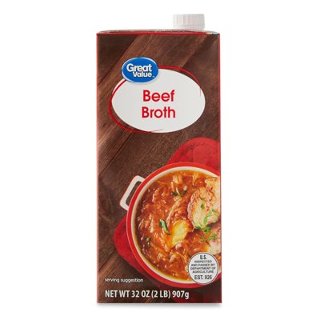
No photo yet
View itemGreat Value Gluten-Free Beef Broth, 32 oz cartonBuy 1 carton only if the extra gluten-free beef broth already at home is gone stock check meal Aisle A13$1.24 each · line $1.24 · #4111 online pickup check 11/13 (not rechecked 11/17)Extra beef broth is already at home. Sunday stir-fry only needs a splash if the pan is dry. Skip this carton unless that stock is gone. Read the Gluten-Free label.Add note
-
Pioneer Gluten-Free Brown Gravy Mix, 1.61 oz packetBuy 2 packets only if fewer than 2 Gluten-Free packets remain for Friday hamburger patties stock check meal Aisle A13$2.48 each · line $4.96 for 2 packets · #4111 online pickup check 11/13 (not rechecked 11/17)Extra gravy packets are already at home. Friday dinner still needs 2 packets that actually say gluten-free. Read the label; regular brown gravy is not a substitute.
Add note
-
Bob's Red Mill Gluten-Free Old Fashioned Rolled Oats, 32 oz bagBuy 1 bag (32 oz). Read the Gluten-Free label. core meal Aisle A13$8.12 each · line $8.12 · #4111 price from the 11/12 list (not rechecked 11/17)Friday breakfast squares use 3 cups, Monday baked oatmeal uses 3 cups, and Friday's after-school smoothie uses a little more. Sunday 11/15 pancakes already used about 4 1/2 cups from the earlier bag, so a new 32 oz bag is planned as core. Aisle A13 confirmed 11/12.
Add note
-
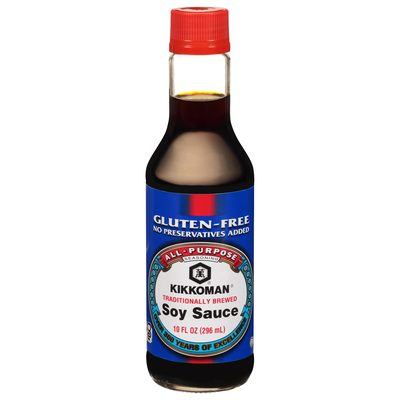
No photo yet
View itemKikkoman Gluten-Free Soy Sauce, 10 oz (green-label)Buy 1 bottle only if the gluten-free bottle at home is empty. Do not buy regular soy or Great Value soy. stock check meal Aisle A13$4.08 each · line $4.08 · #4111 walmart.com check 11/5 (not rechecked 11/17). Aisle A13 confirmed 11/5.Sunday stir-fry uses about 1/3 cup of gluten-free soy. Match the green-label Kikkoman photo. Regular soy is not gluten-free.Add note
-
No photo yetGreat Value Great Northern or cannellini (white) beans, 15-15.5 oz canBuy 2 cans (Sunday white-bean cucumber salad). Pinto or black beans are the wrong color for this lunch. core meal Aisle A13 (unconfirmed)Single-can #4111 and Walmart.com pickup prices were not confirmed today (a 12-can case listing is not a store-shelf price). Not in the totals. Black beans on the 11/12 list were $1.84 at A13, but that is a different SKU.Sunday lunch is a white-bean cucumber salad for five plus the afternoon meal. Grouped with canned beans in A13 (black beans were confirmed A13 on 11/12); the exact white-bean slot is unconfirmed. No white-bean photo was saved.
Add note


A14rice1 item
-
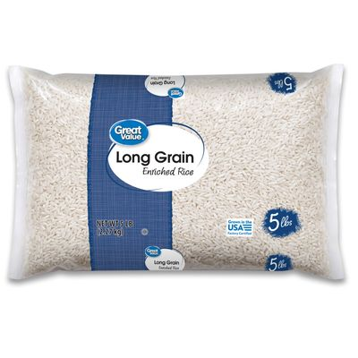
No photo yet
View itemGreat Value Long Grain Enriched Rice, 5 lb bagBuy 1 bag only if the 5 lb bag from the Monday 11/16 list was not bought or is already low stock check meal Aisle A14$3.52 each · line $3.52 · Walmart.com catalog 11/16 (not a confirmed #4111 pickup check; not rechecked 11/17). Aisle A14 confirmed 11/16.Friday dinner uses 1 1/2 cups dry rice, and Monday lunch bowls use about 2 cups dry. That is well under 5 lb if Monday's bag made it home. Skip this bag if that rice is on the shelf. Sunday dinner uses rice noodles, not this rice.Add note
A15tortillas, pasta, rice noodles, honey4 items
-
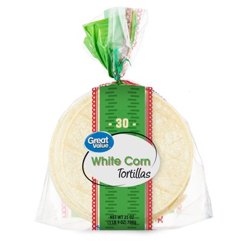
No photo yet
View itemGreat Value Medium White Corn Tortillas, 30 ctBuy 1 pack (30 ct) core meal Aisle A15$1.98 each · line $1.98 · #4111 online pickup check 11/13 (not rechecked 11/17)Saturday breakfast tacos use about 10 tortillas, and Monday chowder crisps use about 8 to 10 more. Aisle A15 confirmed 11/12 and 11/16.Add note
-
Great Value Gluten-Free Brown Rice Elbow Pasta, 16 oz bagBuy 1 bag (16 oz). Read the Gluten-Free label. core meal Aisle A15 (unconfirmed)$4.33 each · line $4.33 · Walmart.com catalog 11/16 (not a confirmed #4111 pickup check; not rechecked 11/17). Aisle A15 is the pasta grouping from the Monday list; that aisle was never confirmed at #4111.Saturday chicken and cheese pasta salad is a shared gluten-free bowl. Tuesday's bag from the Monday list will already have been cooked. Do not buy regular wheat pasta for this lunch.
Add note
-
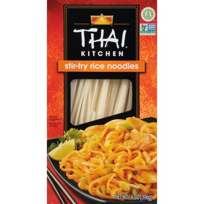
No photo yet
View itemThai Kitchen Gluten-Free Stir-Fry Rice Noodles, 14 oz boxBuy 1 box (14 oz). Read the Gluten-Free label. Another brand is fine if it says gluten-free and is about this size. core meal Aisle A15 (unconfirmed)Walmart.com listed this 14 oz box (item 25876539) today, but published figures did not agree ($4.72 on one browse page, $5.12 on the product-page scrape) and the page itself timed out. No #4111 pickup price. Not in the totals.Sunday beef and broccoli stir-fry. 14 oz is the planned amount for five. Thin 8.8 oz rice vermicelli is a different cut; use stir-fry-width noodles if both are on the shelf. Grouped with pasta in A15; aisle unconfirmed. Photo may be missing if the product-page image could not be saved.Add note
-
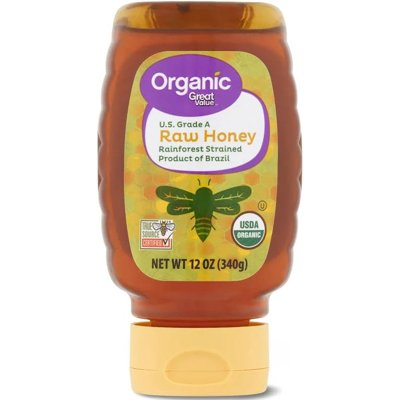
No photo yet
View itemGreat Value Honey, 12 oz plastic bearBuy 1 bottle only if less than 1/3 cup honey remains for Friday squares and Monday baked oatmeal stock check meal Aisle A15 (unconfirmed)$3.72 each · line $3.72 · Walmart.com catalog 11/17 (item 20647992, 31 cents/oz), not a confirmed #4111 pickup check. Walmart.com listed aisle A15; that aisle is not confirmed at #4111 (grouped here with A15 grocery).Friday oat squares use 1/3 cup honey, and Monday baked oatmeal uses another 1/3 cup. Skip if a bottle with at least 2/3 cup is already open.Add note

A18granola1 item
-
KIND Healthy Grains Oats & Honey Gluten Free Granola, 11 ozBuy 1 bag only if the gluten-free granola from 11/13 will not cover Monday afternoon snacks. Read the Gluten-Free label. stock check meal Aisle A18$5.28 each · line $5.28 · #4111 price from the 11/12 list (not rechecked 11/17). Aisle A18 confirmed 11/12.Monday afternoon snack is yogurt and gluten-free granola. The 11/13 bag was bought as a core item and may still have enough. Skip if it does.
Add note

A20peanut butter, bread2 items
-
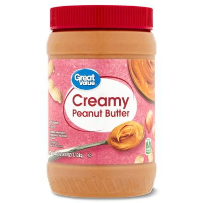
No photo yet
View itemGreat Value Creamy Peanut Butter, 40 oz jarBuy 1 jar only if less than about 1 1/2 cups remain stock check meal Aisle A20$3.58 each · line $3.58 · #4111 price from the 11/12 list (not rechecked 11/17). Aisle A20 confirmed 11/12.Friday squares use 1 cup peanut butter, plus Friday snacks, Sunday waffles and rice cakes, and Monday toast. That will empty a low jar.Add note
-
Great Value Honey Wheat Bread, 20 oz loafBuy 1 loaf only if the leftover loaf will not cover Monday peanut-butter toast for anyone who does not need gluten-free bread stock check meal Aisle A20$2.02 each · line $2.02 · #4111 online pickup check 11/13 (not rechecked 11/17). Aisle A20 confirmed 11/16. Bread files to meals, not staples.Monday after-school toast. Gluten-free eaters use the Canyon loaf, not this one. Skip if a honey-wheat loaf is already open and mostly full.
Add note

A21crackers, chips, rice cakes, nuts5 items
-
GOOD THINS Garden Veggie Rice Snacks, gluten-free crackers, 3.5 ozBuy 1 box only if the gluten-free crackers from 11/13 are already low. Read the Gluten-Free label. stock check meal Aisle A21$3.87 each · line $3.87 · #4111 price from the 11/12 list (not rechecked 11/17). Aisle A21 confirmed 11/12.Friday lunch crackers, Sunday lunch and afternoon rice crackers, and other gluten-free snacks. Regular RITZ cannot go on the gluten-free plates.
Add note
-
RITZ Original Crackers, 13.7 oz boxBuy 1 box only if the open box will not cover Friday and Sunday lunches for anyone who is not eating gluten-free crackers stock check meal Aisle A21$3.97 each · line $3.97 · #4111 price from the 11/12 list (not rechecked 11/17). Aisle A21 confirmed 11/12.Not for the gluten-free plates. Skip if a box is already open.
Add note
-
No photo yetCorn tortilla chips, about 11-13 oz bag (plain corn, not a flavored wheat chip)Buy 1 bag for Saturday after-school roll-ups. Read the ingredient list; plain corn chips are usually gluten-free, but check the label. core meal Aisle A21 (unconfirmed)No confirmed #4111 or reliable single-bag Walmart.com pickup price today (search results were multipacks or unrelated bags). Not in the totals.Saturday after-school snack is deli chicken and cheese roll-ups with corn chips. Grouped with snacks in A21; aisle unconfirmed. No photo yet.
Add note
-
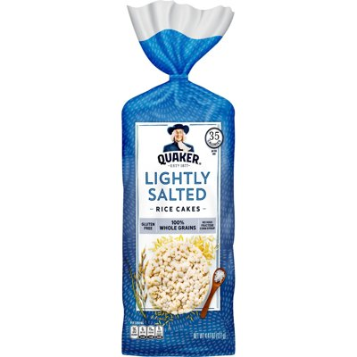
No photo yet
View itemQuaker Lightly Salted Rice Cakes (gluten-free if the label says so), about 4.47 ozBuy 1 bag for Sunday peanut-butter banana rice cakes. Read the Gluten-Free label. core meal Aisle A21 (unconfirmed)Walmart item 10312599 was found, but the listed $3.28 came with shipping and a 74% off flag that does not look like a #4111 shelf price. Not used in the totals.Sunday after-school snack. Grouped with snacks in A21; aisle unconfirmed. Photo may be missing.Add note
-
No photo yetMixed nuts, about 8-16 oz (plain roasted; no candy coating)Buy 1 bag only if the nut jar at home will not cover Saturday and Sunday snacks stock check meal Aisle A21 (unconfirmed)Price and exact SKU not confirmed today. Not in the totals.Saturday afternoon snack and Sunday morning snack use nuts. Skip if a jar is already open. Grouped with snacks in A21; aisle unconfirmed. No photo yet.
Add note


A28cheddar, eggs2 items
-
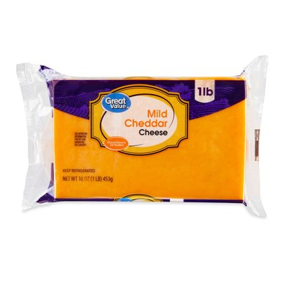
No photo yet
View itemGreat Value Mild Cheddar Block Cheese, 16 oz chunkBuy 1 block (16 oz) core meal Aisle A28$3.58 each · line $3.58 · #4111 online pickup check 11/13 (not rechecked 11/17). Aisle A28 confirmed 11/16.Cubes and shreds for Friday through Monday lunches, snacks, Saturday tacos, and Sunday bean salad. The Monday 11/16 block was meant to cover only Tue-Thu. Cheese means cubes, not sticks.Add note
-
Great Value Large White Eggs, 18 ctBuy 1 carton (18 ct) core meal Aisle A28$2.47 each · line $2.47 · #4111 receipt 11/13 and the Monday list (not rechecked 11/17). Aisle A28 confirmed 11/16.Friday squares use 2 eggs, Saturday tacos use about 9, Saturday crumb coating uses 2, and Monday oatmeal uses 2. That is 15 before any leftover from the 11/13 carton, which already covered Tuesday scrambled eggs.
Add note

A29yogurt, milk2 items
-
Great Value Greek Plain Nonfat Yogurt, 32 oz tubBuy 2 tubs core meal Aisle A29$2.78 each · line $5.56 for 2 tubs · #4111 online pickup check 11/13 (not rechecked 11/17). Aisle A29 confirmed 11/16.Breakfast sides, snacks, Saturday slaw dressing, and daily late-morning yogurt bowls over four days. The two tubs on the Monday 11/16 list were meant to cover Tue-Thu.
Add note
-
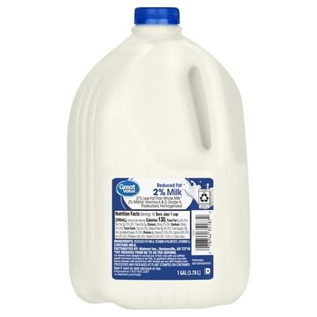
No photo yet
View itemGreat Value 2% Reduced Fat Milk, 1 gallonBuy 1 gallon only if the gallon at home is already low stock check staples Aisle A29$2.68 each · line $2.68 · #4111 online pickup check 11/13 (not rechecked 11/17). Aisle A29 confirmed 11/16. Milk files to staples.Monday baked oatmeal uses 2 cups, Monday chowder uses 1 1/2 cups, and drinks plus the Friday smoothie use more. Staples envelope.Add note

A31ground beef, tenders, stir-fry beef4 items
-
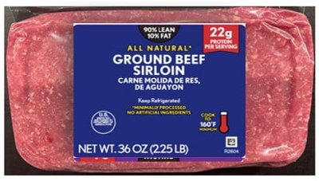
No photo yet
View item90/10 Ground Beef Sirloin, 2.25 lb brickBuy 1 brick (2.25 lb) for Friday hamburger patties. 80/20 is also fine if that is the tray on the shelf. core meal Aisle A31$16.78 each · line $16.78 · $7.46/lb · #4111 price used on the 11/12 and 11/16 lists (not rechecked 11/17). Aisle A31 confirmed 11/16. The 11/13 receipt also had a 5 lb 80/20 pack at $24.93 ($4.99/lb); that pack was for earlier dinners and is not assumed to still have 2 lb left.Friday oven hamburger patties need 2 lb ground beef. No ground turkey and no pork. If a priced 80/20 pack of about 2 to 3 lb is cheaper per pound on the shelf, that cut is fine for this dinner.Add note
-
Freshness Guaranteed Chicken Breast Tenderloins, 2.25-3.2 lb tray (Saturday dinner)Buy 1 tray for Saturday oven tenders (about 2 lb needed). Thaw Friday night. core meal Aisle A31$9.16 each · line $9.16 · #4111 price used on the 11/12 and 11/16 lists (not rechecked 11/17). Actual tray weight varies; the 11/13 ticket had two tender trays at $8.57 and $7.73 with no weight printed. Aisle A31 confirmed 11/16.Saturday oven tenders, crumbed at home. Plain tenders, not thighs, and not a breaded freezer product. Keep this tray separate from Monday's tray.
Add note
-
Freshness Guaranteed Chicken Breast Tenderloins, 2.25-3.2 lb tray (Monday chowder)Buy a second tray for Monday chowder (about 2 lb needed). Thaw Sunday night. core meal Aisle A31$9.16 each · line $9.16 · same SKU and price note as the Saturday tray. Aisle A31 confirmed 11/16.Monday chicken, corn, and potato chowder needs its own tray. Do not plan to stretch one tray across both dinners.
Add note
-
No photo yetBeef sirloin steak or stir-fry strips, about 1.5 lb (sold by weight)Buy about 1.5 lb, sliced thin across the grain for Sunday stir-fry. Not ground beef, not pork, and not leftover pot roast unless you chose that on purpose and still have enough. core meal Aisle A31 (unconfirmed)No confirmed #4111, Walmart.com, H-E-B, or Sam's price today. Sold by the pound and not in the totals. Grouped in meat aisle A31 (aisle confirmed for the other meat SKUs; this exact cut is unconfirmed).Sunday beef and broccoli rice-noodle stir-fry. The menu does not name the cut; sirloin or labeled stir-fry strips are the planned buy. Thaw Saturday night if it is frozen. No photo yet.
Add note

A33deli chicken1 item
-
No photo yetDeli chicken, sliced to order (chicken only, not a tub)Buy about 2 lb sliced to order by the lb · stock check meal Aisle A33Price unconfirmed at #4111 (same gap as the Monday list). By the lb; not in the totals. Ask for chicken only, sliced to order, and read the gluten-free label.Friday lettuce wraps, Saturday pasta salad if Thursday leftover chicken was not saved on purpose, Saturday roll-ups, and Monday rice bowls. About 2 lb covers those lunches and the afternoon meals. Aisle A33 confirmed 11/16. Skip buying extra for Saturday lunch only if a reserved Thursday portion is already in the fridge.
Add note
J17paper plates1 item
-
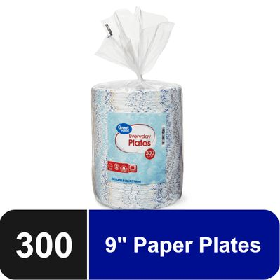
No photo yet
View itemGreat Value Everyday Design Paper Plates, 8.5 in, 300 ctBuy 1 pack only if the pack from the Monday 11/16 list was not bought or is already gone stock check staples Aisle J17$12.97 each · line $12.97 · 4.32 cents/plate · Walmart.com catalog 11/16 (not a confirmed #4111 shelf check; not rechecked 11/17). Aisle J17 confirmed 11/16. Staples envelope.This pack was already a core line on SL-20261116-MON. Check at home before you buy another 300 ct.Add note
J26paper towels1 item
-
Great Value Everyday Strong Paper Towels, Split Sheets, 6 Triple Rolls (2-ply, 990 sheets)Buy 1 pack only if the pack from the Monday 11/16 list was not bought or is already gone stock check staples Aisle J26$8.12 each · line $8.12 · 0.82 cents/sheet · Walmart.com catalog 11/16 (not a confirmed #4111 shelf check; not rechecked 11/17). Aisle J26 confirmed 11/16. Staples envelope.This pack was already a core line on SL-20261116-MON. Check at home before you buy another.
Add note

Notes and send
Notes stay on this phone until you send or copy them. The send button opens your email app, already addressed to the Meal Planner inbox, with the checked items and your notes filled in. Nothing is sent until you press Send there. Please attach a photo of the receipt.